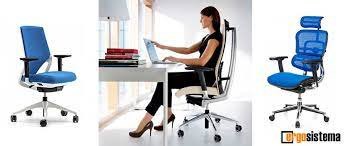

La silla(del latín sella) es un mueble que suele tener un respaldo, generalmente cuenta con tres o cuatro apoyos y su finalidad es la de servir de asiento a una persona. Las sillas pueden estar elaboradas con diferentes materiales: madera, hierro, forja, plástico o una combinación de varios de ellos.
Según su diseño, las sillas pueden ser clásicas, rústicas,
modernas, de oficina, etc. Las que son anchas, con
respaldo algo alto, con brazos y balancín se denominan sillones. Las que también cuentan con brazos pero son estrechas se denominan butacas, como las de comedor o de teatro. Las que son muy cómodas, con brazos y respaldo bajo se denominan poltronas osofá.
Silla de niño. Silla con ruedas para transportar el infante sentado en ella, que suele tener las siguientes características:
Una silla para auto , también conocida como sistema de retención infantil, butaca de seguridad, autoasiento o silla infantil, es el sistema de retención idóneo cuando los niños viajan en auto.
Por ello, el asiento de una silla para trabajar debe tener:
Altura ajustable según las necesidades de cada persona.
Suficiente anchura y profundidad para soportar el peso del usuario de forma cómoda.
Base firme con un diseño ligeramente cóncavo para evitar la compresión de muslos y glúteos.

¿Cómo saber si una silla es cómoda para mí?.. Si los ángulos de sus caderas, rodillas y tobillos no están cómodamente a 90º, entonces, la silla es demasiado alta o demasiado baja. Todas sus articulaciones deberían permanecer a 90 grados.